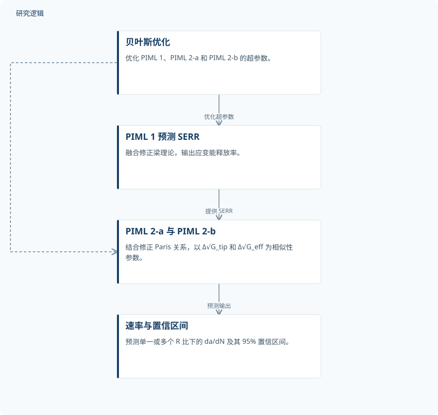

摘要解读
物理信息机器学习预测复合材料层合板疲劳分层扩展及纤维桥联定义的置信区间
A Physics‐Informed Machine Learning Model for Predicting Fatigue Delamination Growth With Fiber Bridging‐Defined Confidence Intervals in Composite Laminates
解读更新 2026-11-10 13:23 · 依据公开摘要整理，未核验全文细节
复合材料层合板的疲劳分层扩展存在离散性，如何预测扩展速率，同时表达纤维桥联与载荷比变化下的不确定性？这项研究将断裂力学关系嵌入机器学习，以速率及其置信区间作为预测目标。
文章目录
纤维桥联与载荷比变化下，如何描述扩展离散性
研究关注疲劳分层扩展（FDG）：在不同纤维桥联强度和载荷比（R 比）下，如何组织扩展速率 da/dN 与裂纹驱动力之间的关系。摘要采用裂纹尖端参数 Δ√G_tip 和有效参数 Δ√G_eff 表述应变能释放率（SERR）相关驱动力，并以它们作为 Paris 型关系的相似性参数。这里的核心问题不只是给出一条速率曲线，还包括描述数据的散布。
先预测能量释放率，再衔接修正 Paris 关系
框架由三个物理信息机器学习（PIML）模型组成。PIML 1 融合修正梁理论（MBT），用于预测 SERR；PIML 2-a 和 PIML 2-b 接收其输出，结合修正 Paris 关系，以 Δ√G_tip 和 Δ√G_eff 为相似性参数，预测单一或多个 R 比下的 da/dN 及其 95% 置信区间。各模型的超参数均通过贝叶斯优化确定。摘要明确了模型间的物理量传递关系，但没有展开具体网络结构和训练细节。
依据摘要整理的物理信息预测流程


仅展示摘要明确的模型衔接和超参数优化关系，不代表论文原图，也不补充未报告的训练配置。
下载 SVG图示关系说明
实线表示相邻阶段的信息流，虚线表示跨阶段联系或反馈。
贝叶斯优化 → PIML 1 预测 SERR：优化超参数；贝叶斯优化 → PIML 2-a 与 PIML 2-b：优化超参数；PIML 1 预测 SERR → PIML 2-a 与 PIML 2-b：提供 SERR；PIML 2-a 与 PIML 2-b → 速率与置信区间：预测输出
数据归并为带状分布，推动区间化预测
摘要报告，采用上述两种相似性参数后，不同纤维桥联强度和 R 比下的速率数据归并为带状分布，而非仅描述为一条曲线。作者据此构建框架来表征 FDG 的离散性，并将其用途表述为支持复合材料层合板中考虑变异性的预测。带状分布与区间输出是本研究值得关注的联系；但摘要没有提供预测误差或区间覆盖表现，不能据此判断预测精度。
样本构成、比较优势与区间验证仍待查阅
仅凭本次摘要，无法判断材料体系、试样数量、纤维桥联强度与 R 比的具体覆盖范围，也无法确认训练与测试数据如何划分。摘要未报告与其他模型的定量比较、独立验证范围，以及 95% 置信区间的构造和校准方式。这些是当前资料无法回答的问题，不意味着论文没有开展相应工作；也不能将所述预测用途直接理解为工程可靠性已获验证。
阅读启发：物理参数如何连接离散性表达
阅读启发：后续阅读可围绕两个相互关联的问题展开——两种相似性参数各自如何组织数据带，纤维桥联又如何参与置信区间的定义。对于疲劳可靠性研究，还值得核对这些区间表达的统计含义与适用条件，而不是直接把速率置信区间等同于寿命范围或失效概率。当前摘要支持关注这条物理建模与不确定性表达的连接，但不足以推导其运维或设计收益。
以上为本站阅读启发与建议，不是论文已验证的结论。